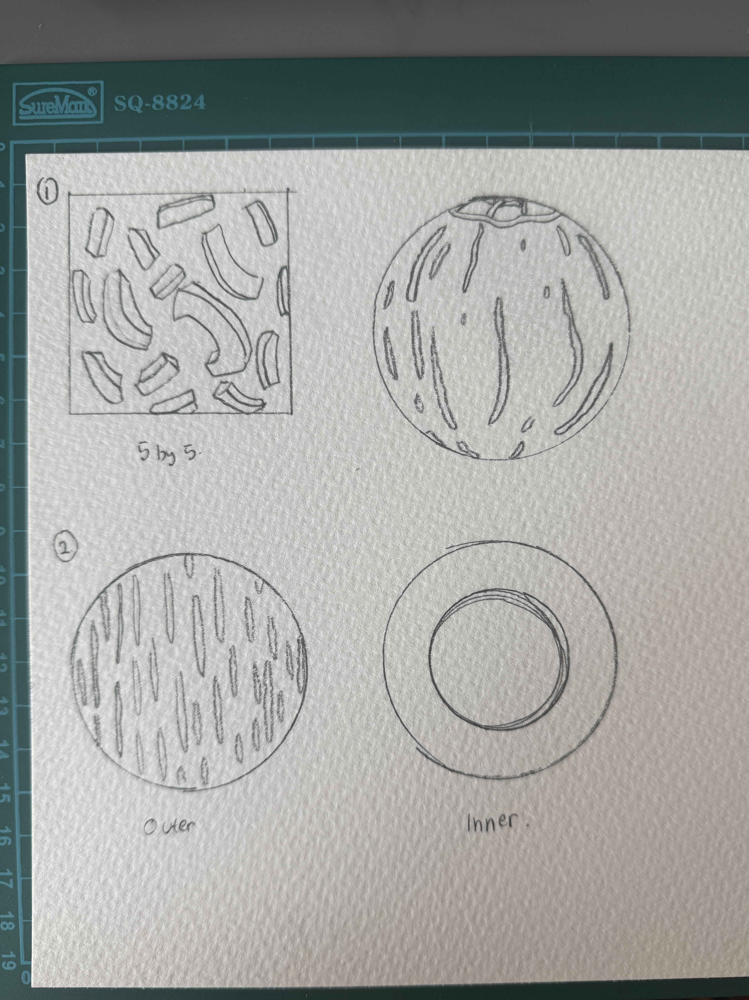
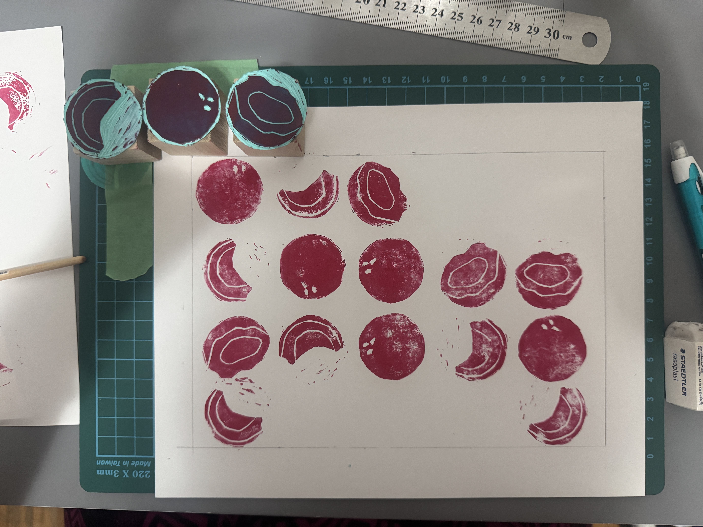
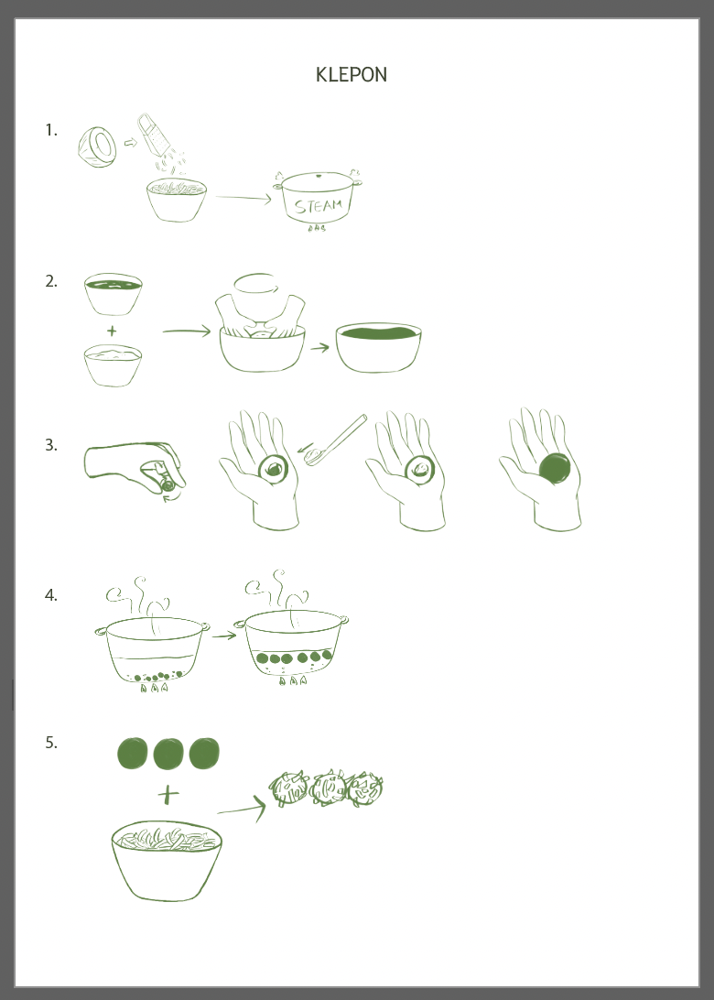
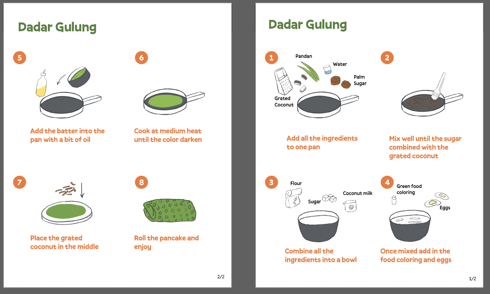

Explorations


This week, I was sketching more with what I currently have, such as doing more explorations of the coconuts. For this particular sketch, I wanted it to be round; unlike the rice grain sketch, the negative space is square, and I didn’t want it to be square because a coconut is already round. Then I started working from that idea and came up with a few sketches.

For the linoprint, I decided to use three because the sketches I made were quite similar, so I picked the ones that looked distinct from each other. The first one is the whole coconut, the second one is halved, and the third is one-fourth. So it depicts the different stages of the coconut. I thought of it this way because some snacks in jajanan pasar use grated coconut, and I wanted to explain the process of cutting open the coconut because, in the end, what’s used is what's inside.


I also tried to make the square-shaped form for the grated coconut, but it was really difficult to make it so precise because the cut is so small; every scrape matters. But I decided not to explore this further because it's so time-consuming and I keep messing up.

At the same time, I started to illustrate some food infographics. I started by sketching Klepon, one of the foods in jajanan pasar. I drew the sketch based on the videos while searching for the recipe. I focused more on illustrating how you make the klepon; that’s why the initial sketch didn’t have any words, just the step-by-step recipe.
But I do realize that without any words, people won’t know the measurements, the cooking time, and more. And also, I noticed that when I was drawing the klepon, I was just using one color, green; it was an interesting exploration, but I feel that adding more colors will make the infographic more lively.

I decided to make some changes to the infographic by adding more colors and words. I was also thinking about changing the format of the infographic because when I printed it on A4, it felt too big, so I decided to decrease the size to 200 cm by 250 cm, which is a comfortable format.
Reflection
There were a lot of changes and ideas getting scrapped because I needed to be mindful of the time. At the time, I also realized I had only around 2 weeks until submission, so there wasn’t much time to explore and add to what I had on hand. It was a tough time for me, trying to get everything done and making sure that everything was ready to go.